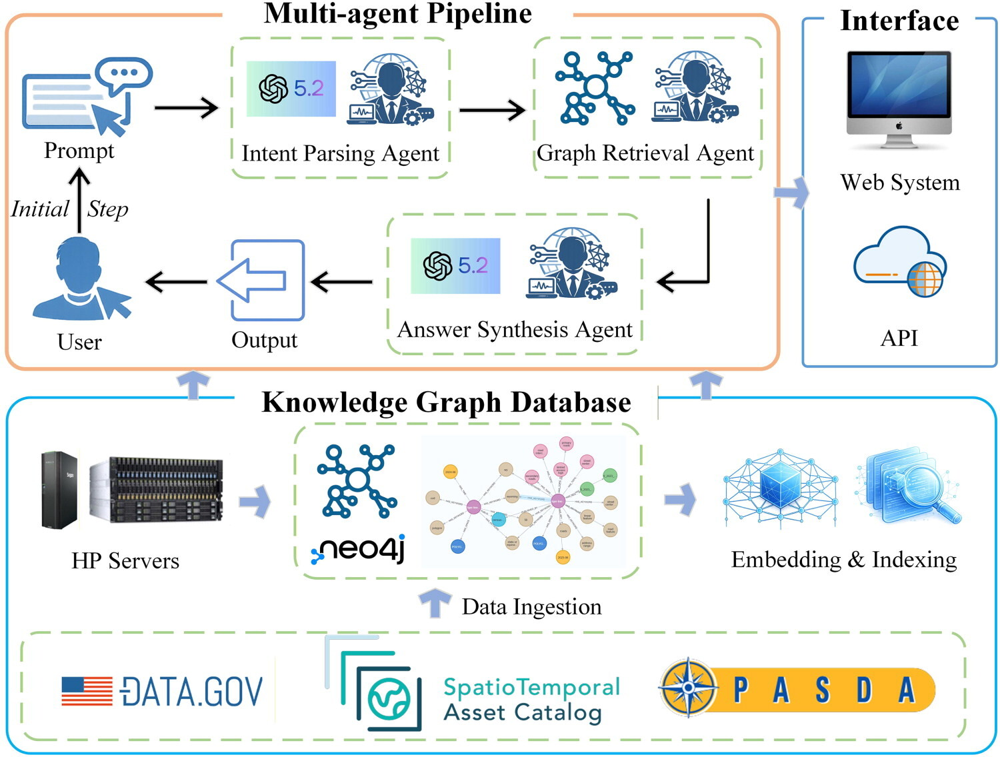

INT. J. Geographical Information Science · 2026
Towards intelligent geospatial data discovery: a knowledge graph-driven multi-agent framework powered by large language models
Liu, R., Li, Z., & Khosravi Kazazi, A. (2026).